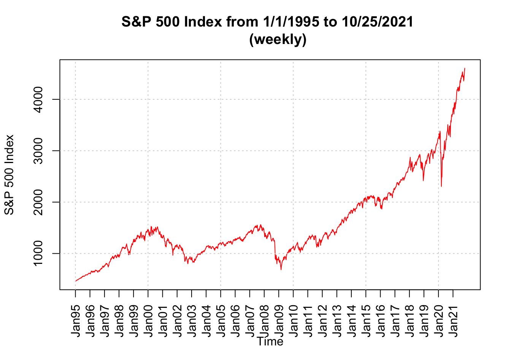

3 Time Series Basics-Plotting
In this chapter, we will go over some Time Series examples. The aim of this chapter is to help you grasp some of the ideas about plotting.
3.1 Example Data
Click OSU_enroll.csv to download data.
osu.enroll <- read.csv(file = "OSU_enroll.csv",
stringsAsFactors = TRUE)
head(osu.enroll)
#> t Semester Year Enrollment date
#> 1 1 Fall 1989 20110 8/31/1989
#> 2 2 Spring 1990 19128 2/1/1990
#> 3 3 Summer 1990 7553 6/1/1990
#> 4 4 Fall 1990 19591 8/31/1990
#> 5 5 Spring 1991 18361 2/1/1991
#> 6 6 Summer 1991 6702 6/1/1991
tail(osu.enroll)
#> t Semester Year Enrollment date
#> 35 35 Spring 2001 20004 2/1/2001
#> 36 36 Summer 2001 7558 6/1/2001
#> 37 37 Fall 2001 21872 8/31/2001
#> 38 38 Spring 2002 20922 2/1/2002
#> 39 39 Summer 2002 7868 6/1/2002
#> 40 40 Fall 2002 22992 8/31/2002
x <- osu.enroll$Enrollment
#One way to do plot
dev.new(width = 8, height = 6, pointsize = 10)
# we did not specify y-axis and R put our x in y-axis, time in x-axis
plot(x = x, ylab = "OSU Enrollment",
xlab = "t (time)", type="l", col = "red",
main = "OSU Enrollment from Fall 1989 to Fall 2002",
panel.first = grid(col = "gray", lty = "dotted"))
dev.new(width = 8, height = 6, pointsize = 10)
# we did not specify y-axis and R put our x in y-axis, time in x-axis
plot(x = x, ylab = "OSU Enrollment",
xlab = "t (time)", type="l", col = "red",
main = "OSU Enrollment from Fall 1989 to Fall 2002",
panel.first = grid(col = "gray", lty = "dotted"))
points(x = osu.enroll$Enrollment, pch = 20, col = "blue")Altenatively, you can do the same thing using ggplot.
library(ggplot2)
# Create a data frame
df <- data.frame(osu.enroll)
# Create the plot
ggplot(df, aes(x = t, y = Enrollment)) +
geom_line(colour = "red") + # Line plot
geom_point(shape = 20, colour = "blue") + # Add points
labs(x = "t (time)", y = "OSU Enrollment",
title = "OSU Enrollment from Fall 1989 to Fall 2002") + # Set axis labels and title
theme_bw() + # Set the theme to a white background with black lines
theme(panel.grid.major = element_line(colour = "gray", linetype = "dotted")) # Add gray dotted lines to the plot
When only x is specified in the plot() function, R puts this on the y-axis and uses the observation number on the x-axis.
Compare this to the next plot below where both x and y arguments are specified.
#More complicated plot
fall <- osu.enroll[osu.enroll$Semester == "Fall",]
spring <- osu.enroll[osu.enroll$Semester == "Spring",]
summer <- osu.enroll[osu.enroll$Semester == "Summer",]
plot(y = fall$Enrollment, x = fall$t,
ylab = "OSU Enrollment", xlab = "t (time)",
col = "blue",
main = "OSU Enrollment from Fall 1989 to Fall 2002",
panel.first = grid(col = "gray", lty = "dotted"),
pch = 1, type = "o", ylim = c(0,max(osu.enroll$Enrollment)))
lines(y = spring$Enrollment, x = spring$t, col = "red",
type = "o", pch = 2)
lines(y = summer$Enrollment, x = summer$t, col =
"darkgreen", type = "o", pch = 3)
legend(x="center", legend= c("Fall","Spring","Summer"), pch=c(1,2,3), lty=c(1,1,1), col=c("blue","red","darkgreen"), bty="n")
#Another way to do plot with actual dates
plot(y = osu.enroll$Enrollment,
x = as.Date(osu.enroll$date, format = "%m/%d/%Y"),
xlab = "Time", type = "l", col = "red",
main = "OSU Enrollment from Fall 1989 to Fall 2002",
ylab = "OSU Enrollment")
points(y = osu.enroll$Enrollment,
x = as.Date(osu.enroll$date, format = "%m/%d/%Y"), pch
= 20, col = "blue")
#Create own gridlines
# v specifies vertical line; h specifies horizontal line
abline(v = as.Date(c("1990/1/1", "1992/1/1", "1994/1/1",
"1996/1/1", "1998/1/1", "2000/1/1", "2002/1/1")),
lty = "dotted", col = "lightgray")
abline(h = c(10000, 15000, 20000), lty = "dotted", col =
"lightgray")
3.2 S&P500 Index
Click SP500weekly.csv to download data.
SP500 <- read.csv(file="SP500weekly.csv",stringsAsFactors = TRUE)
head(SP500)
#> WeekStart Open High Low Close AdjClose Volume
#> 1 1/1/1995 459.21 462.49 457.20 460.68 460.68 1199080000
#> 2 1/8/1995 460.67 466.43 458.65 465.97 465.97 1627330000
#> 3 1/15/1995 465.97 470.43 463.99 464.78 464.78 1667400000
#> 4 1/22/1995 464.78 471.36 461.14 470.39 470.39 1628110000
#> 5 1/29/1995 470.39 479.91 467.49 478.65 478.65 1888560000
#> 6 2/5/1995 478.64 482.60 478.36 481.46 481.46 1579920000
tail(SP500)
#> WeekStart Open High Low Close AdjClose
#> 1395 9/19/2021 4402.95 4465.40 4305.91 4455.48 4455.48
#> 1396 9/26/2021 4442.12 4457.30 4288.52 4357.04 4357.04
#> 1397 10/3/2021 4348.84 4429.97 4278.94 4391.34 4391.34
#> 1398 10/10/2021 4385.44 4475.82 4329.92 4471.37 4471.37
#> 1399 10/17/2021 4463.72 4559.67 4447.47 4544.90 4544.90
#> 1400 10/24/2021 4553.69 4608.08 4537.36 4605.38 4605.38
#> Volume
#> 1395 15697030000
#> 1396 15555390000
#> 1397 14795520000
#> 1398 13758090000
#> 1399 13966070000
#> 1400 16206040000
x <- SP500$Close
#One way to do plot
dev.new(width = 8, height = 6, pointsize = 10)
#again, we do not specify y-axis here
plot(x = x, ylab = "S&P 500 Index", xlab = "t (time)",
type = "l", col = "red", main = "S&P 500 Index from
1/1/1995 to 10/25/2021 (weekly)",
panel.first = grid(col = "gray", lty = "dotted"))
#Another way to do plot with actual dates
plot(y = x, x = as.Date(SP500$WeekStart, format =
"%m/%d/%Y"), xlab = "Time", type = "l", col = "red", main
= "S&P 500 Index from 1/1/1995 to 10/25/2021 (weekly)",
ylab = "S&P 500 Index")
#Create own gridlines
abline(v = as.Date(c("1995/1/1", "2000/1/1", "2005/1/1",
"2010/1/1", "2015/1/1", "2020/1/1")), lty = "dotted",
col = "lightgray")
abline(h = seq(from = 0, to = 5000, by = 1000), lty =
"dotted", col = "lightgray")
# One more way with fine control of the dates
plot(y = x, x = as.Date(SP500$WeekStart, format =
"%m/%d/%Y"), xlab = "Time", type = "l", col = "red",
main = "S&P 500 Index from 1/1/1995 to 10/25/2021
(weekly)", ylab = "S&P 500 Index", xaxt = "n")
axis.Date(side = 1, at = seq(from = as.Date("1995/1/1"),
to = as.Date("2021/12/31"), by = "years"), labels =
format(x = seq(from = as.Date("1995/1/1"), to =
as.Date("2021/12/31"), by = "years"), format = "%b%y"),
las = 2) #las changes orientation of labels
#Create own gridlines
abline(v = as.Date(c("1995/1/1", "2000/1/1", "2005/1/1",
"2010/1/1", "2015/1/1", "2020/1/1")), lty = "dotted",
col = "lightgray")
abline(h = seq(from = 0, to = 5000, by = 1000), lty =
"dotted", col = "lightgray")
3.3 Sunspots
Click SN_y_tot_V2.0.csv to download data.
sunspots <- read.table(file = "SN_y_tot_V2.0.csv", sep =
";", col.names = c("Mid.year", "Mean.total",
"Mean.SD.total", "Numb.obs.used", "Definitive"))
head(sunspots)
#> Mid.year Mean.total Mean.SD.total Numb.obs.used
#> 1 1700.5 8.3 -1 -1
#> 2 1701.5 18.3 -1 -1
#> 3 1702.5 26.7 -1 -1
#> 4 1703.5 38.3 -1 -1
#> 5 1704.5 60.0 -1 -1
#> 6 1705.5 96.7 -1 -1
#> Definitive
#> 1 1
#> 2 1
#> 3 1
#> 4 1
#> 5 1
#> 6 1
tail(sunspots)
#> Mid.year Mean.total Mean.SD.total Numb.obs.used
#> 316 2015.5 69.8 6.4 8903
#> 317 2016.5 39.8 3.9 9940
#> 318 2017.5 21.7 2.5 11444
#> 319 2018.5 7.0 1.1 12611
#> 320 2019.5 3.6 0.5 12884
#> 321 2020.5 8.8 4.1 14440
#> Definitive
#> 316 1
#> 317 1
#> 318 1
#> 319 1
#> 320 1
#> 321 1
dev.new(width = 8, height = 6, pointsize = 10)
#again, we did not specify y-axis here
plot(x = sunspots$Mean.total, ylab = "Number of
sunspots", xlab = "t (time)", type = "l", col = "red",
main = "Sunspots per year from 1700 to 2020",
panel.first = grid(col = "gray", lty = "dotted"))
points(x = sunspots$Mean.total, pch = 20, col = "blue")
# Include dates
plot(y = sunspots$Mean.total, x = sunspots$Mid.year, ylab
= "Number of sunspots", xlab = "Year", type = "l", col
= "red", main = "Sunspots per year from 1700 to 2020",
panel.first = grid(col = "gray", lty = "dotted"))
points(y = sunspots$Mean.total, x = sunspots$Mid.year,
pch = 20, col = "blue")
#Convert to an object of class "ts"
x <- ts(data = sunspots$Mean.total, start = 1700, frequency
= 1)
x
#> Time Series:
#> Start = 1700
#> End = 2020
#> Frequency = 1
#> [1] 8.3 18.3 26.7 38.3 60.0 96.7 48.3 33.3 16.7
#> [10] 13.3 5.0 0.0 0.0 3.3 18.3 45.0 78.3 105.0
#> [19] 100.0 65.0 46.7 43.3 36.7 18.3 35.0 66.7 130.0
#> [28] 203.3 171.7 121.7 78.3 58.3 18.3 8.3 26.7 56.7
#> [37] 116.7 135.0 185.0 168.3 121.7 66.7 33.3 26.7 8.3
#> [46] 18.3 36.7 66.7 100.0 134.8 139.0 79.5 79.7 51.2
#> [55] 20.3 16.0 17.0 54.0 79.3 90.0 104.8 143.2 102.0
#> [64] 75.2 60.7 34.8 19.0 63.0 116.3 176.8 168.0 136.0
#> [73] 110.8 58.0 51.0 11.7 33.0 154.2 257.3 209.8 141.3
#> [82] 113.5 64.2 38.0 17.0 40.2 138.2 220.0 218.2 196.8
#> [91] 149.8 111.0 100.0 78.2 68.3 35.5 26.7 10.7 6.8
#> [100] 11.3 24.2 56.7 75.0 71.8 79.2 70.3 46.8 16.8
#> [109] 13.5 4.2 0.0 2.3 8.3 20.3 23.2 59.0 76.3
#> [118] 68.3 52.9 38.5 24.2 9.2 6.3 2.2 11.4 28.2
#> [127] 59.9 83.0 108.5 115.2 117.4 80.8 44.3 13.4 19.5
#> [136] 85.8 192.7 227.3 168.7 143.0 105.5 63.3 40.3 18.1
#> [145] 25.1 65.8 102.7 166.3 208.3 182.5 126.3 122.0 102.7
#> [154] 74.1 39.0 12.7 8.2 43.4 104.4 178.3 182.2 146.6
#> [163] 112.1 83.5 89.2 57.8 30.7 13.9 62.8 123.6 232.0
#> [172] 185.3 169.2 110.1 74.5 28.3 18.9 20.7 5.7 10.0
#> [181] 53.7 90.5 99.0 106.1 105.8 86.3 42.4 21.8 11.2
#> [190] 10.4 11.8 59.5 121.7 142.0 130.0 106.6 69.4 43.8
#> [199] 44.4 20.2 15.7 4.6 8.5 40.8 70.1 105.5 90.1
#> [208] 102.8 80.9 73.2 30.9 9.5 6.0 2.4 16.1 79.0
#> [217] 95.0 173.6 134.6 105.7 62.7 43.5 23.7 9.7 27.9
#> [226] 74.0 106.5 114.7 129.7 108.2 59.4 35.1 18.6 9.2
#> [235] 14.6 60.2 132.8 190.6 182.6 148.0 113.0 79.2 50.8
#> [244] 27.1 16.1 55.3 154.3 214.7 193.0 190.7 118.9 98.3
#> [253] 45.0 20.1 6.6 54.2 200.7 269.3 261.7 225.1 159.0
#> [262] 76.4 53.4 39.9 15.0 22.0 66.8 132.9 150.0 149.4
#> [271] 148.0 94.4 97.6 54.1 49.2 22.5 18.4 39.3 131.0
#> [280] 220.1 218.9 198.9 162.4 91.0 60.5 20.6 14.8 33.9
#> [289] 123.0 211.1 191.8 203.3 133.0 76.1 44.9 25.1 11.6
#> [298] 28.9 88.3 136.3 173.9 170.4 163.6 99.3 65.3 45.8
#> [307] 24.7 12.6 4.2 4.8 24.9 80.8 84.5 94.0 113.3
#> [316] 69.8 39.8 21.7 7.0 3.6 8.83.3.1 plot.ts()
plot() is a generic function - uses the plot.ts() method function
# we did not specify y-axis here, but x is now ts
plot(x = x, ylab = expression(paste(x[t], " (Number of
sunspots)")), xlab = "Year", type = "o", col = "red", main
= "Sunspots per year from 1700 to 2020")